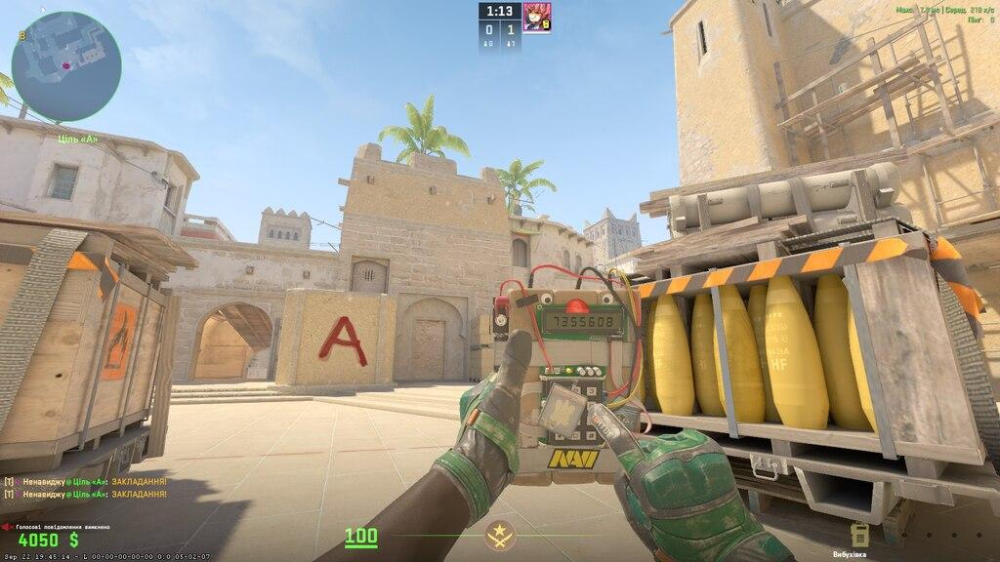
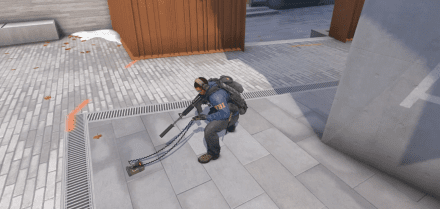

Terroristas (TR)
O objetivo principal é plantar a bomba (C4) em um dos locais determinados do mapa, chamados de bombsites A e B, e impedir que os contra-terroristas a desarmem.

Counter Strike 2
Conheça Sobre: O Counter-Strike 2 (CS2) é um jogo competitivo de tiro em primeira pessoa no qual duas equipes se enfrentam em partidas que exigem muito mais do que apenas boa mira. Trabalho em equipe, estratégia, comunicação, conhecimento dos mapas e tomada de decisões são fatores fundamentais para alcançar a vitória Neste blog, você encontrará um guia para entender melhor o universo do CS2 e desenvolver suas habilidades dentro do jogo.
O objetivo principal é plantar a bomba (C4) em um dos locais determinados do mapa, chamados de bombsites A e B, e impedir que os contra-terroristas a desarmem.

Devem impedir o plantio da bomba, eliminar os terroristas ou, se ela for plantada, desarmá-la antes que exploda.

© 2026 doPrataAoGlobal.